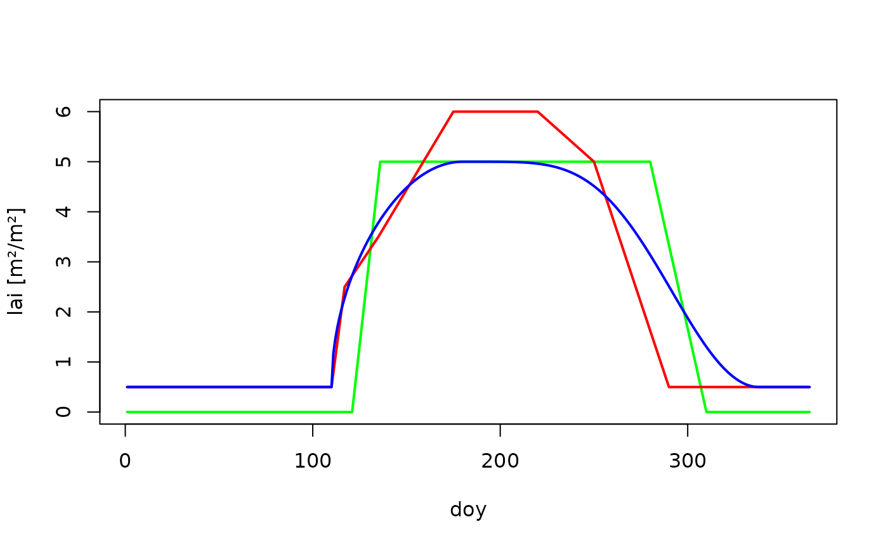
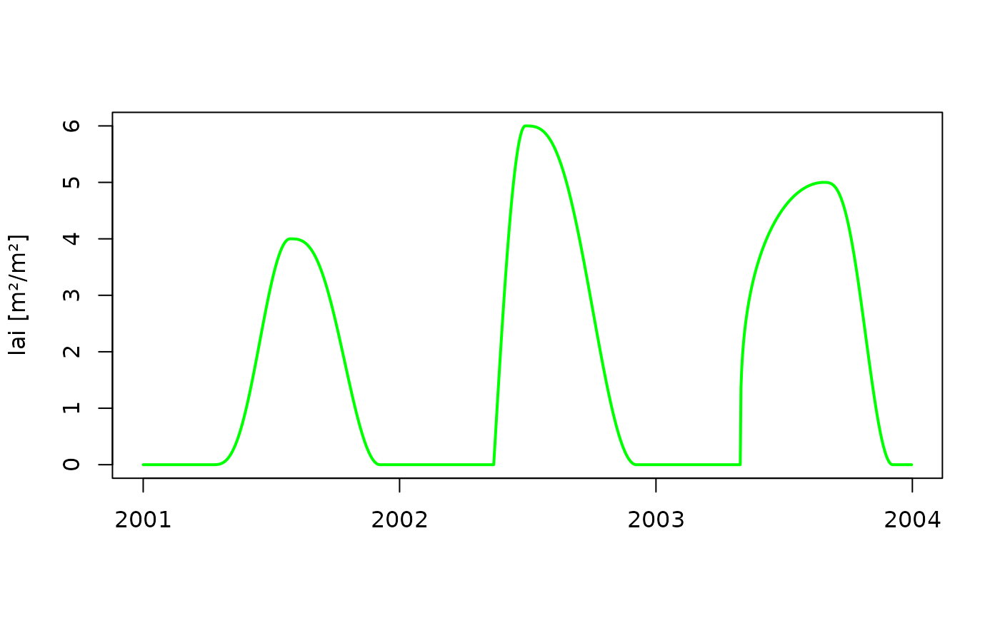

Construct the seasonal course of leaf area index from parameters
Source:R/MakeSeasLAI.R
make_seasLAI.RdA daily sequence of leaf area index is derived from maximum and minimum values, dates and shape parameters using different methods.
Arguments
- method
Name of method for generating the sequence. Must be one of "b90", "linear", "Coupmodel".
- year
Vector of years to be returned.
- maxlai
Maximum leaf are index.
- winlaifrac
Fraction of
maxlaiduring winter (ignored whenmethod = 'linear').- budburst_doy
Budburst day of year (ignored when
method = 'linear').- leaffall_doy
Day of year when leaf fall begins (ignored when
method = 'linear').- emerge_dur
Number of days from budburst until maximum leaf area index is reached.
- leaffall_dur
Number of days until minimum leaf are index is reached.
- shp_optdoy
Day of year when optimum value is reached (required when
method = "Coupmodel").- shp_budburst
Shape parameter for the growth phase (required when
method = "Coupmodel").- shp_leaffall
Shape parameter growth cessation (required when
method = "Coupmodel").- lai_doy
Integer vector of days of years.
- lai_frac
Vector of values of fractional leaf area index corresponding to lai_doy (required when
method = "linear").
Examples
# Intraannual courses of leaf area index
lai_b90 <- make_seasLAI(method = "b90",
year = 2001,
maxlai = 5,
winlaifrac = 0,
budburst_doy = 121,
leaffall_doy = 280,
emerge_dur = 15,
leaffall_dur = 30)
lai_doy <- c(1,110,117,135,175,220,250,290,365)
lai_frac <- c(0.1,0.1,0.5,0.7,1.2,1.2,1.0,0.1,0.1)
lai_linear <- make_seasLAI(method = "linear",
year = 2001,
maxlai = 5,
lai_doy = lai_doy,
lai_frac = lai_frac)
lai_coupmodel <- make_seasLAI(method = "Coupmodel",
year = 2001,
maxlai = 5,
winlaifrac = 0.1,
budburst_doy = 110,
leaffall_doy = 280,
shp_optdoy = 180,
shp_budburst = 0.5,
shp_leaffall = 5)
plot(lai_b90, type = "n", xlab = "doy", ylab = "lai [m²/m²]", ylim = c(0,6))
lines(lai_b90, col ="green",lwd = 2,)
lines(lai_linear, col ="red",lwd = 2)
lines(lai_coupmodel, col ="blue",lwd = 2)

# incorparating between-year variability
years <- 2001:2003
lai <- make_seasLAI(method = "Coupmodel",
year = years,
maxlai = c(4,6,5),
budburst_doy = c(100,135,121),
leaffall_doy = 280,
shp_budburst = c(3,1,0.3),
shp_leaffall = 3,
shp_optdoy =c(210,180,240) )
dates <- seq.Date(as.Date("2001-01-01"), as.Date("2003-12-31"), by = "day")
plot(dates,lai, col = "green", ylab = "lai [m²/m²]",
type ="l", xlab = "", lwd = 2)
